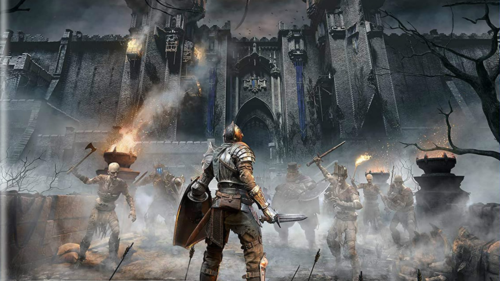
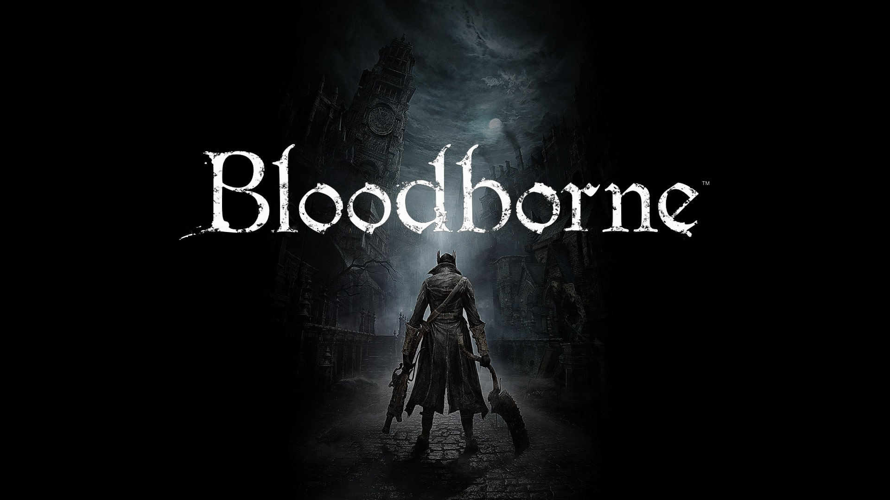
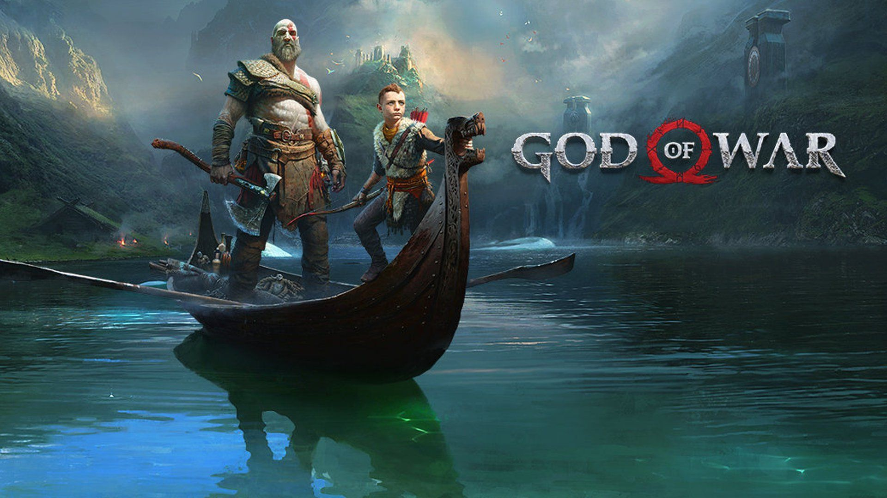
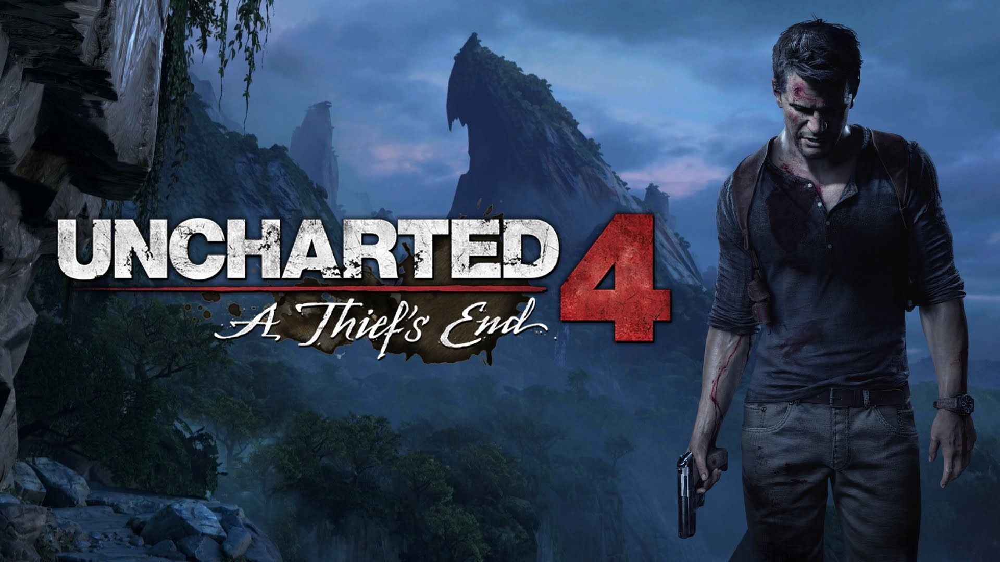

Demon's Souls
En su búsqueda de poder, el rey Allant, decimosegundo gobernante de Boletaria, canalizó las
ancestrales artes del alma y despertó a un demonio originario de los albores del tiempo: el Antiguo.
Tras invocar al Antiguo, una niebla incolora invadió todo el territorio y liberó a criaturas aterradoras
con una implacable sed de almas humanas. A las víctimas, despojadas del alma y de la razón, solo les
quedó el deseo de atacar a quienes aún mantienen la cordura.

Bloodborne
La antigua ciudad de Yharnam posee la maldición de una extraña epidemia que se expande por
las calles como pólvora. Persigue tus pesadillas mientras buscas respuestas. El peligro, la muerte y la
locura acechan cada esquina de este tenebroso y sombrío mundo y, si quieres sobrevivir, deberás
descubrir sus secretos más oscuros.

God Of War
Un comienzo totalmente nuevo: la venganza de Kratos contra los dioses del Olimpo ha quedado
atrás y ahora vive como un hombre en las tierras de los dioses y monstruos nórdicos. Será en este mundo
hostil y sin piedad donde deberá luchar para sobrevivir... y donde deberá enseñar a su hijo a hacer lo
mismo. Esta sorprendente recreación de God of War deconstruye los elementos centrales que definían la
serie y los combina de un
modo totalmente nuevo.

Marvel Spider Man
No se trata del Spider-Man que has conocido antes ni visto en alguna película. Aquí
encontraremos a un experimentado Peter Parker, mucho más capacitado en su lucha contra el crimen
organizado de la ciudad de Nueva York. Al mismo tiempo, lucha para encontrar un equilibrio entre su
caótica vida personal y su profesión, mientras el destino de la Ciudad de Nueva York según Marvel
descansa sobre sus hombros.

Uncharted 4
Muchos años después de su última aventura, el cazafortunas jubilado, Nathan Drake, es
obligado a regresar al mundo de ladrones. Con riesgos mucho más personales, Drake comienza un viaje por
el mundo en busca de una conspiración histórica detrás de un tesoro de pirata legendario. Su mayor
aventura pondrá a prueba sus límites físicos, su poder de decisión, y por último aquello que es capaz de
sacrificar para salvar a las personas que ama.

The Last Of Us 2
Cinco años después de aquel peligroso viaje por un Estados Unidos que ha sido azotado por
una pandemia, Ellie y Joel echaron raíces en Jackson, Wyoming. Vivir en una comunidad próspera de
supervivientes les dio paz y estabilidad a pesar de la amenaza constante de los infectados y de otros
supervivientes más desesperados. Cuando un evento violento altera la paz, Ellie emprende un viaje
incansable en busca de justicia y de encontrar un cierre.